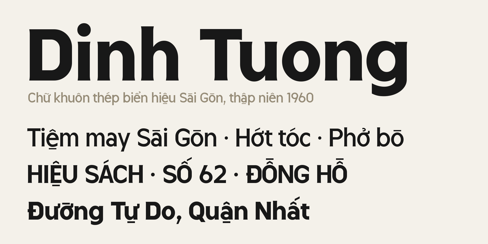
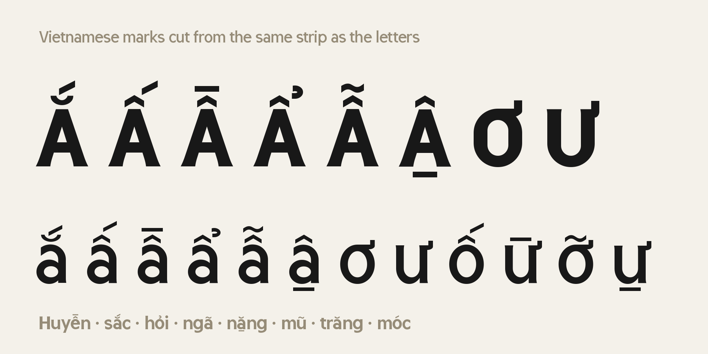
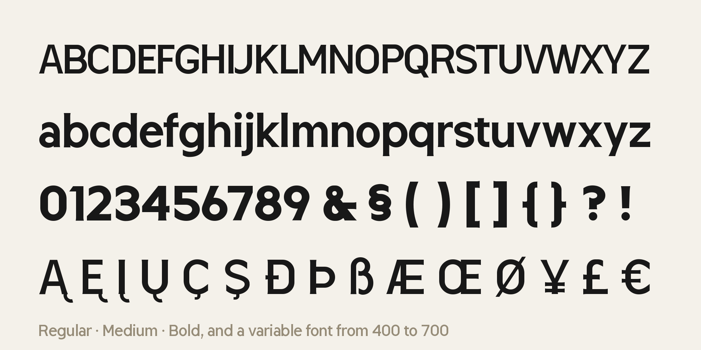

Dinh Tuong is a display typeface drawn from the cast-steel stencil lettering of the shop signs and gate signs of 1960s Saigon. It keeps what made that lettering work in the street: strong, even strokes, open shapes and a quiet, upright rhythm that stays readable from across the road.

Every part of the design is built with ruler and compass only. Stems are straight, with a slight flare at their free ends, as if the steel had been cut and filed by hand. Round letters are upright ellipses. Open terminals end in a single vertical cut, and joints thin a little where a curve leaves a stem, so the letters keep their colour even in the Bold. Brackets, parentheses, the ogonek and the cedilla follow the same rule: one even stroke, with inner and outer curves that run parallel.
The Vietnamese marks are not added on top of the letters. They are cut from the same steel strip as the letters, in the same stroke system, so a page of Vietnamese text keeps one even colour. The acute rises from the same strip that lies level as the grave; the circumflex is two acutes meeting at a point; the hook, the tilde and the breve are made of the same rings and arcs as the lowercase. Stacked marks share one top line, and every pair of letters is kerned against the ink of its marks, so marked words space as evenly as unmarked ones.

The family comes in three weights, Regular, Medium and Bold, and as a variable font with a weight axis from 400 to 700. At 400, 500 and 700 the variable font draws exactly like the static fonts. It supports Vietnamese in full and the GF Latin Core character set, with tabular figures for prices and timetables. That makes it suited to signs, posters, packaging, menus and headlines, wherever text should feel built rather than written.

Dinh Tuong is designed by DIZAI studio. To contribute, see github.com/alexduonguiux-hub/DinhTuong-Typeface.